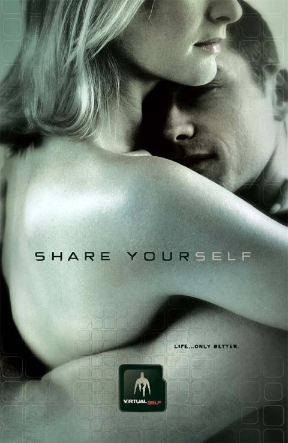
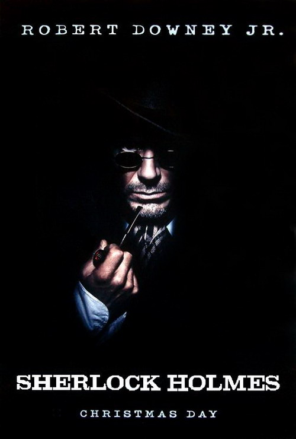

Название: Бэндслэм
Ориг. название: Bandslam
Жанр: комедия, драма, музыка Год: 2009 Страна: США
Режиссёр: Тодд Графф Сценарист: Джош А. Кэган, Тодд Графф
В ролях: Гэлан Коннелл, Элисон Мичалка, Ванесса Энн Хадженс, Лиза Кудроу, Чарли Сэкстон, Тим Джо, Скотт Портер
Дополнительно: премьера (мир) 12 августа 2009
Описание
отсутствует

Название: Суррогаты
Ориг. название: Surrogates
Жанр: фантастика, боевик, триллер Год: 2009 Страна: США
Режиссёр: Джонатан Мостоу Сценарист: Роберт Вендитти, Бретт Уэлделе, Майкл Феррис (адаптация), Джон Д. Бранкато (адаптация)
В ролях: Брюс Уиллис, Рада Митчелл, Винг Рэймс, Розамунд Пайк, Майкл Кадлитц, Нед Вон, Дженнифер Олден, Джек Нозуорти, Девин Рэтрэй, Джонатан Артур, Тэйлор Коул, Роджер Диллингэм-мл., Мишель Хопкинс, Рэйчел Стерлинг
Дополнительно: Премьера (РФ) 24 сентября 2009, «BVSPR Disney»
Описание
Действие разворачивается в будущем, в 2057 году, — когда люди практически перестанут общаться между собой и полностью возложат эту функцию на плечи роботов-заменителей. Они сильнее, моложе, привлекательнее своих обладателей и даже могут быть другого пола. Но находится террорист, начинающий уничтожать идеальных андроидов. Полицейскому Харви Гриру предстоит узнать, какие причины движут злоумышленником, лишающим людей их марионеток, технически и физически совершенных.

Название: Шерлок Холмс
Ориг. название: Sherlock Holmes
Жанр: боевик, триллер, драма, приключения, криминал, детектив Год: 2009 Страна: Великобритания — США
Режиссёр: Гай Ричи Сценарист: Гай Ричи, Энтони Пекэм, Майк Джонсон, Саймон Кинберг (сюжет), Лайонел Уиграм (комикс), Артур Конан Дойл (персонажи)
В ролях: Роберт Дауни-мл. (Шерлок Холмс), Джуд Лоу (Доктор Ватсон), Рэйчел МакАдамс, Марк Стронг, Келли Райли, Эдди Марсэн, Ханс Мэтисон, Роберт Стоун, Уильям Хоуп, Роберт Мэйллет, Дэвид Гэррик
Описание
Величайший в истории сыщик Шерлок Холмс вместе со своим верным соратником Ватсоном вступают в схватку, требующую нешуточной физической и умственной подготовки, ведь их враг представляет угрозу для всего Лондона.